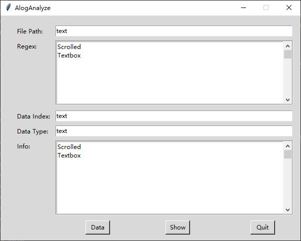

使用PAGE进行GUI布局
GUI drag & drop style GUI Builder for Python Tkinter
PAGE - Python Automatic GUI Generator - Version 7.6
0010_AlogAnalyze
创建新项目: page -p .\AlogAnalyze.tcl
page -p .\AlogAnalyze.tcl
开始布局
生成代码:
导航栏 -> [Gen-Python]
[Generate Support Module]
先生成这个，因为后面的试运行需要用到这个代码
[Generate Python GUI]
生成真正的布局GUI代码
python3 .\AlogAnalyze_support.py 
python3 .\AlogAnalyze_support.py